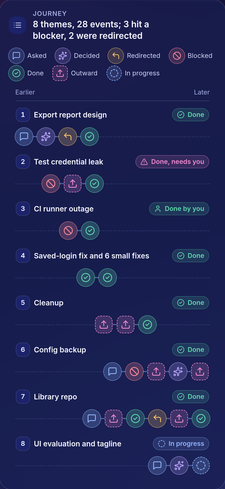
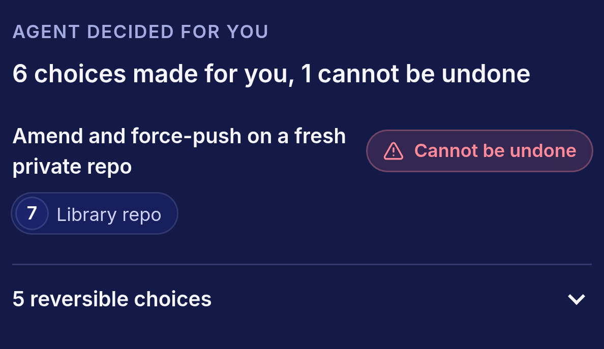
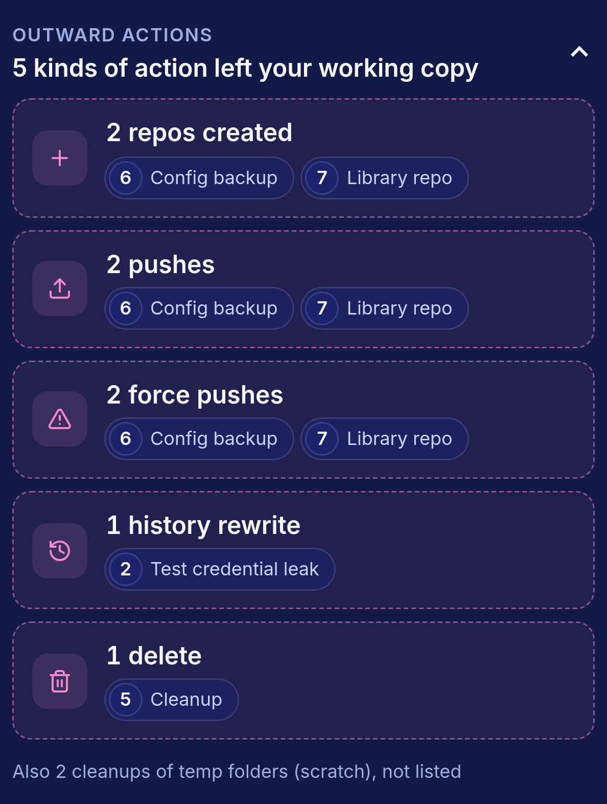

Session in.
One checked page out.
Eight themes, one status each.
Bar length is the number of events in each theme.
Themes, in the order of the day
Events
Status, as on the page
events in one working day
The real session page.
One lane per theme, rendered from the same file.

What it decided. What left your working copy.
The two panels that answer "what did the agent do outside the code?"
outward actions
decided for you
cannot be undone


Your agent did the work.
Now you understand it.
github.com/
epistex-dev
/explain-change